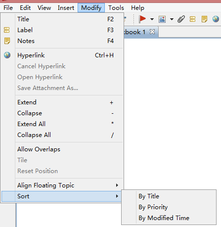

Topic Sorting
Topic Sorting can help us find out useful information, inspect work easily, esp. while we are facing a big mind map.
- Select a topic. Now you can sort its subtopics via Priority, Topic Title, or Modified time
- Click "Modify > Sort > By Priority/Title/Modified time" from the menu
Notes:
- XMind sorts all subtopics of your selected topic.
- If you select "By Title", topics will be sorted alphabetically.
